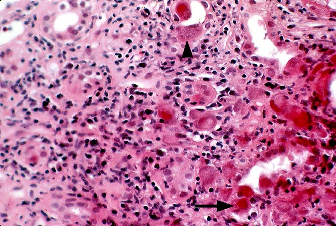

Pharmalogic Therapy of BPH
Alpha-1 antagonists such as tamsulosin are first line therapy against BPH. 5-alpha-reductase inhibitors can also be used as second line therapy. Alpha-1 antagonists may be discontinued due to hypotension. 5-alpha-reductase inhibitors like finasteride have the side effect of decreasing libido.Treatment of Atropine Toxicity
Atropine is an anticholinergic which inhibits the parasympathetic system. Atropine toxicity causes pupil dilation, tachycardia, flushing, and thirst. Treat atropine overdose with an acetylcholinesterase inhibitor like physiostigmine, which increases the amount of available acetyl choline.Acute Interstitial Nephritis
AIN arises 1-2 weeks after administration of an antibiotic. It is indicated by a BUN createnine ratio less than 15, signaling intrarenal failure. Elevated white count with eosinophilia are also present. Medications that can cause AIN include:
- penicillins
- cephalosporins
- sulfonamides
- NSAIDs
- PPIs
Treatment of CHF With Osteoporosis
Loop diuretics like furosemide should not be used with osteoporosis since they inhibit the reabsorbtion of cations like calcium. Loop diuretics work by inhibiting the Na-K-2Cl transporter in the thick aescending limb of the loop of henle. Calcium and Magnesium reabsorbtion rely on a positive luminal charge created by potassium recycling. Thiazides and ACE inhibitors do not affect calcium levels.Adverse Effects of Polymixin B
Polymixin B is an antibiotic effective against gram negatives that acts as a membrane detergent. It can cause: numbness in the extremeties, nephrotoxicity, nystagmus, dizzyness, confusion, and blurred vision.Bernard-Soulier Disease
Bernard-Souler disease causes abnormal bleeding by stopping platelet aggregation. Dysfunction of the vWF receptor block aggregation, causing increased bleeding without elevated PT or PTT. Prolonged PTT is indicative of hemophilia A and prolonged PT is indicative of hemophilia B.Oogenesis Cell Cycle
At birth oocytes are arrested at Prophase 1. After ovulation, the oocyte waits at Metaphase 2 for fertilization.Phase 2 blockers
Phase 2 of the cardiac myosite action potential is charactarized by a slow influx of calcium into the cell. This "trigger calcium is blocked by calcium channel blockers such as the non-dihydropyridine verapamil. Procainamide is a sodium channel blocker and effects phase 0.Treatment of Headache
First line agents for treatment of migrane headaches are serotonin agonists at 5HT-1D and 5HT-1B. Triptans such as sumitriptan are usually the choice.Macrolide Induced Cholestatic Hepatits
Cholestatic hepatits is an effect of macrolide toxicity. Use of macrolides with CYP450 inhibitors like itraconazole increases the risk of toxicity. These patients will present with abdominal pain, jaundice, and elevated liver enzymes. Its worth noting that this effect is more common with older macrolides like clarithromycin and uncommon with azithromycin.Middle Cerebral Stroke
Middle Cerebral artery injury results in expressive aphasia if Broca's area or sensory aphasia if Werneckie's area. Reading, writing, and comprehension can also be damaged.Nevocellular Nevus
Nevus cells, derived from melanocytes, lie within the stratum basalis. The stratum basalis is the most mitotically active region and the source of melanoma.Bleeding Gums vWF
The most common inherited bleeding disorder is von Willebrand's Disease. vWD is an autosomal dominant defficiency of vWF, causing increased bleeding time and increased PTT. Treat with desmopressin => increases vWFFreshwater Pathogens

Entamoeba Histolytica is a freshwater pathogen that causes bloody diarrhea contining throphozites with RBCs under light microscopy. Other freshwater pathogens include Giardia Lambia and Cryptosporidium, however these cause fatty-smelly, and watery diarrhea respectively.
Antineoplastics
Alkylating agents work by crosslinking DNA and interfereing with replication. All drugs in this category cause severe bone marrow supression. Cyclophosphaminde causes hemorrhagic cystitis. Busulfan causes pulmonary fibrosis. Ifosphomide causes bladder toxicity similar to cyclophosphomide. Cyclophosphamide is the modt widely used alkylating agent, it is given as a pro-drug and is metabolised into inactive metabolites and toxic compounds like acrolein (nephrotoxic). Mesna (organosulfur) is used to prevent acrolein toxicity. Nitrosoureas are not cross resistant with other alkylators. They are highly lipid soluble and are therefore indicated for brain tumors due to BBB penetration.
Platinum analogs are similar to alkylating agents im their ability to cross-link DNA. They are named with the suffix -platin. They cause renal toxicity and ototoxicity. Cisplatin is 1st generation and has the highest toxicity. Cisplatin and carboplatin are used to treat solid cancers like lung cancer, ovarian, and vladder cancer. Oxaliplatin, 3rd generation, is unique in the platins in that it is used to treat colorectal cancer.
Anitmetabolites can be divided into: anti-folates, pyrimidine analogs, cytidine analogs, and puring analogs. Many antimetabolites have the suffix -bine. Gemcitabine is a relatively new drug that is indicated for pancreatic cancer. Leucovorin, a reduced form of folic acid, is the antidote for MTX, which also has use in therapy with 5FU. MTX can cause hand-foot syndrome, a painful erythema and swelling of hands and feet. 5FU, like cyclophosphamide, is a pro-drug and it is metabolised to FdUMP the active metabolite which forms a covalent bond to thymidylate synthase. F5U is deactivated by a polymorphic enzyme dihydropyrimidine dehydrogenase. Patients with a deficiency in DPD have higher risk of 5FU toxicity.